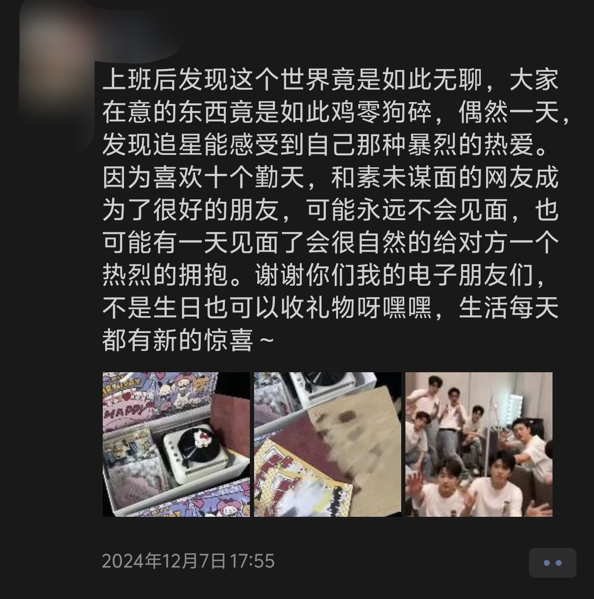

# 黑神话与 TGA
# "含金量"
不是黑猴需要tga来证明其含金量，而是tga需要黑猴证明tga含金量
这是在黑神话相关视频的评论区非常常见的一句话，乍一看是不是倒反天罡、饭圈味浓烈，但其实也有一些道理。优秀的作品可以让奖项更具权威性，一个奖项如果持续有高质量的作品与之关联，说明该奖项的评选标准严格、公正，能够精选出优秀成果。但如果一个奖项不能够从艺术价值、文化内涵、演出水平、主题深度等各方面出发挑选出类拔萃，得到大部分玩家认可的作品，那它的权威性难免被怀疑。我想这也是《宇宙机器人》当选 2024tga 年度游戏在内外网引发如此大争议的原因。
什么奖项才有含金量？从评选方式来说，金摇杆和 TGA 差不多是两个极端。金摇杆的完全由公众投票来决定获奖结果；TGA 媒体评审团占 90% 的投票权重，玩家占 10%。金摇杆更能直接反应玩家喜好和游戏的大众接受度，但也受粉丝数量，宣传力度等因素影响，可能有些小众游戏非常优秀，但没有玩家挖掘自然被埋没；TGA 更注重专业评价和行业认可，不过媒体评审成员的构成和评选标准也一直备受争议。所以在争论这个问题时会出现一些有趣的言论：
玩家投票：没玩过游戏的也能投，刷票、水军多、单机“原神”、投票大国。
媒体评审：妖风横行，政治正确、地区针对、索尼塞钱、任天堂塞钱。
谁是标杆谁是野鸡奖，可能我比较没心没肺，个人觉得争论这些问题没啥意义。大多数玩家会有这样的想法，只要心中的 GOTY 得奖的那这个奖就有含金量，没得奖那就是野鸡，关键还是看屁股坐在哪，争论这个问题其实也就是找个权威的 “袈裟” 给自己喜欢的游戏站台。如果一个游戏非常对你胃口，那尽情投入享受就完事了，至于各种奖不奖项含不含金量的，该对它们祛祛魅了。
奖项的本质是商业性，如果从商业性的角度来说，哪件袈裟最受主创团队喜爱，那还是 TGA，毕竟算是最大的游戏奖项，即使未涉猎游戏的人也略有耳闻，对于提升作品的知名度和销量来说更是其他奖项不可比拟的。从玩家的角度来说，主创的创作热情大增，相关产业对其投资越多，玩家期待的新作也会越来越近。
# 黑神话吧与黑猴笑话吧
黑神话吧是支持黑猴的，黑猴笑话吧是反黑猴的，双方的大多数吧友都喜欢在各自的信息茧房里自娱自乐。黑神话吧倒是没啥可讲的，游戏粉有自己的圈子太正常不过，我对黑猴笑话吧比较感兴趣，好奇他们是什么成分。经过我不是很有 “含金量” 的观察，吧里大概有这样几个群体：一是确实对黑猴无感，认为黑猴并不是一个合格的好游戏，不配得奖，这个群体比较多，但并不排除是由以下群体衍生而来的；二是相关视频下出现了黑猴粉丝不成熟、不理智、诸如道德绑架、拉踩其他游戏、唯黑猴独尊的言论，这些略带” 侵略性 “的行为对喜爱其他优秀游戏的玩家并不友好，导致其对黑猴的印象比较差；三是认可黑猴，但由于说出了黑猴的一些缺点被极端黑猴粉丝攻击嘲讽，打上标签甚至开除国籍，于是认为黑猴粉丝群体都很逆天，将其冠以批字辈，加入反黑猴大军；四是对黑猴艺术指导杨奇过去一的些言论感到不满，但这通常是用来对抗黑猴玩家的辅助手段，数量较少；还有一些崇洋媚外，对本土文化易犯” 尴尬 “的人，就没必要提了。
多数猴黑从原先对游戏的批评演变为对猴粉的攻击，脱离了最初讨论问题的初衷，将矛头从游戏转向了粉丝，开始大查成分，挖掘放大猴粉过去的逆天言论，批判不再有理有据，污言秽语倒是四处横飞，本是矛盾源头的游戏问题，也仅仅是这场网络混场的攻击手段之一。这时候，猴粉不再是猴粉，而是被打成了 “猴批”。
最著名的批字辈是 “原批”，就是由于这个群体经常发表逆天言论，被大众嘲笑，“原神第一定律” 也被称为互联网第一定律。其实也能理解，原神可是力压艾尔登发环荣获 2022GTA 玩家之声的游戏，足以和 2024 年玩家之声获得者黑神话悟空相媲美😎。黑猴作为第一部国产 3A，取得了巨大成功，吸引了庞大的玩家群体，但林子大了什么鸟都有，难免出现一些逆天言论。粉丝往往将自身情感和期望寄托于游戏，将其视为自己的精神成就，游戏获奖，粉丝也跟着激动自豪，但一旦游戏利益收到损害了，粉丝也会觉得自身的所认同和追求的价值受到挑战，从而产生维护游戏的强烈情感冲动，出现不合理的攻击性言论，而粉丝的行为常常被视为是正主的延申，其不理智的行为会让公众对游戏产生不良印象，即使正常粉丝理智发言，也会被附带性地打成 “饭圈”。
# 游戏 "饭圈"
“饭圈” 这个词通常用来指粉丝围绕娱乐圈的明星偶像组成的文化圈子，但由于经常出现诸如引战拉踩、过度追捧、集资应援等行为，多数时候是贬义的。我尝试将娱乐圈和游戏圈的行为联系起来：粉丝为偶像打榜，相当于玩家为游戏投票，但打榜更多时候带有商业性质，比如需要购买代言产品等；粉丝购买偶像周边和作品，相当于玩家购买游戏联名产品，比如手柄、键盘、立体雕塑、音乐磁带等；粉丝为偶像创作二创作品，相当于玩家出游戏攻略、剧情预测分析、无伤速通视频、角色主题曲、游戏 mod 等；粉丝比点赞数、转发量、超话排行榜，如同玩家比游戏销量、在线人数、国际赛事成绩；粉丝磕偶像 cp，就像艾尔登法环也有梅琳娜和拉妮的正宫之争的难题；粉丝反对偶像谈恋爱，就像玩家不希望黑猴中有恋爱情节，斗战圣佛们可以普渡众生，但不能独爱一人，否则会破坏他们的神圣感......
同样两个圈子也有过度追捧和盲目维护。正主由于其优秀品质获得大量粉丝，但其中某些极端粉丝将对正主的喜爱扭曲成一种排他性的 “信仰”，容不得他人对正主的批评，渐渐的不再专注于正主本身的进步与发展，而是在社交平台上大肆炫耀，贬低其他偶像或游戏
# 含金量
演员们通过精湛的演技塑造一个个鲜活的角色，歌手凭借独特的嗓音和出色的演唱诠释动人的旋律，作家凭借丰富的想象和优美的文字编织迷人的故事，电竞选手在赛场上展现出的高超操作、精妙战术配合以及坚韧不拔的竞技精神，游戏开发者精心打造充满创意与挑战的游戏世界。如果我们更加聚焦于这些本质，沉浸体验作品的魅力，感受艺术带来的触动和共鸣，少去执着于 “袈裟” 的争夺，纯粹地享受，圈子也会干净一点。

上图源自某位同学的朋友圈。
在烦闷的日子去寻找生活的意义和盼头，不去陷入消极情绪的漩涡，或许是大多数人的目标吧。朋友圈不乏有人晒演唱会现场，我还挺羡慕的，他们一定很开心，能亲睹偶像在舞台上的辉煌时刻，能亲耳听到偶像的歌曲，能和与自己所爱相同的粉丝一起加油呐喊，能找到自己热爱的人和事并认真追求，这绝对是一段美好的回忆。
毕业后在外面租房过着独居生活，我经常担心自己的情绪没有波动，这样的生活太没有意义了，毕业第一个月我买了锅碗瓢盆调味品，学着炒菜做饭，第二个月一个人外面出差不太习惯，买了头戴式耳机听音乐，第三个月为了玩《黑神话悟空》，买了显卡和显卡坞，十月一个人毫无计划地骑了一百多公里的山地车到莆田，附带剪了个视频，十一月拼了两个模型...... 哈哈，看起来我好像一直在用消费来保持对生活的新鲜感......
让你所爱的事物成为丰富精神、提升审美、舒缓压力、获取动力的源泉，而非引发纷争与烦恼的导火线，生活本够烦躁，争哪个奖有含金量也没啥意义了，自己心目中的最佳游戏奖才是最具含金量的奖项。
其实关于这个话题我认为不太适合放在周记里面，另起一篇更好，但周记没啥内容写了，就暂且先放在这吧，至少别让周记断更了，断根一次那后面还会有无数次